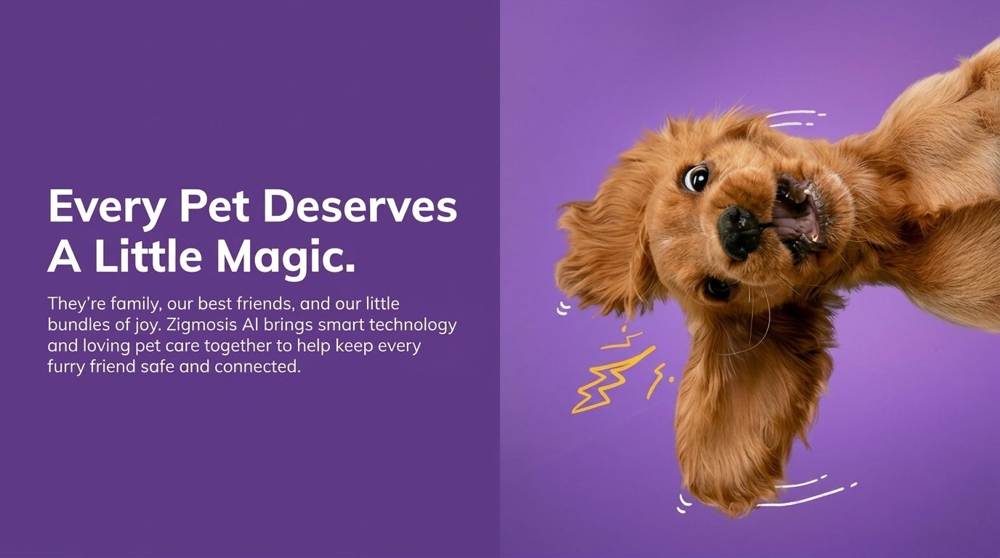
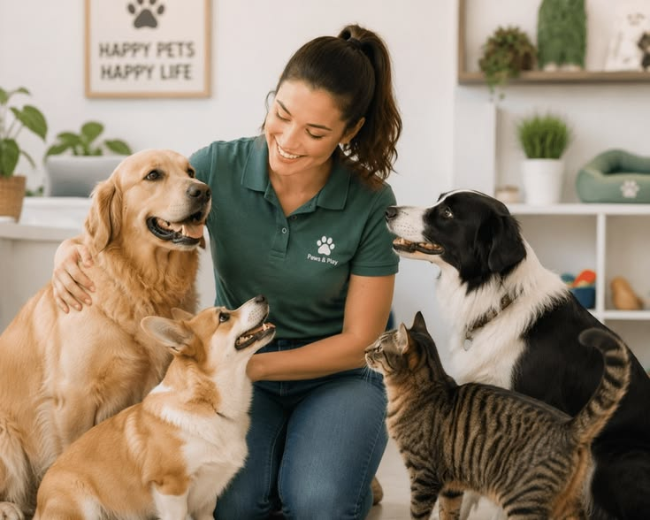
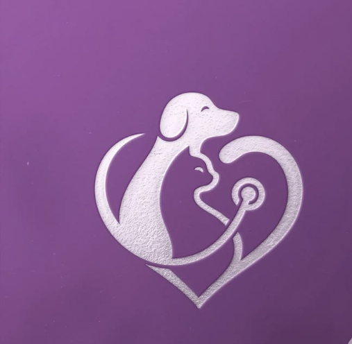

★★★★
I always worry about my dog getting lost. Having his details in one place is a really good idea.


Every pet deserves a safe, healthy and happy life. However, keeping pet information organised and finding a missing pet can sometimes be difficult.
Zigmosis AI was created to bring pet identity, healthcare support and missing-pet assistance together in one convenient digital platform.
Get in Touch
Our mission is to provide a simple digital platform where pet owners can manage pet identities, report missing or found pets, and connect with others. Through QR codes and community support, we aim to improve pet safety and promote responsible pet ownership.

Our vision is to create a safer community for pets and their owners by using technology to improve pet identification and help reunite missing pets with their families. We aim to build a future where every pet has a better chance of returning home safely
Create your pet profile with details, owner information and health records.
Generate a unique QR-based identity that stores important pet information.
Create a missing or found pet report with photos, location details, contact information and help reunite pets with their families.
Receive AI-powered guidance about pet health, nutrition and care.
Provide helpful articles and practical tips to help pet owners care for their pets, improve their safety, and find missing animals
See what pet lovers think about making life safer for their furry friends.
I always worry about my dog getting lost. Having his details in one place is a really good idea.
The QR tag idea is my favourite. Someone could scan it and find important information about a lost pet.
I have two cats, so keeping their information organised would be really useful for me.

I like that the idea is simple. You don't need to carry around lots of details about your pet.
Anything that can help bring a lost pet back home is worth looking into. I would definitely be interested.
Pet information, QR tags and missing-pet support in one place sounds convenient.